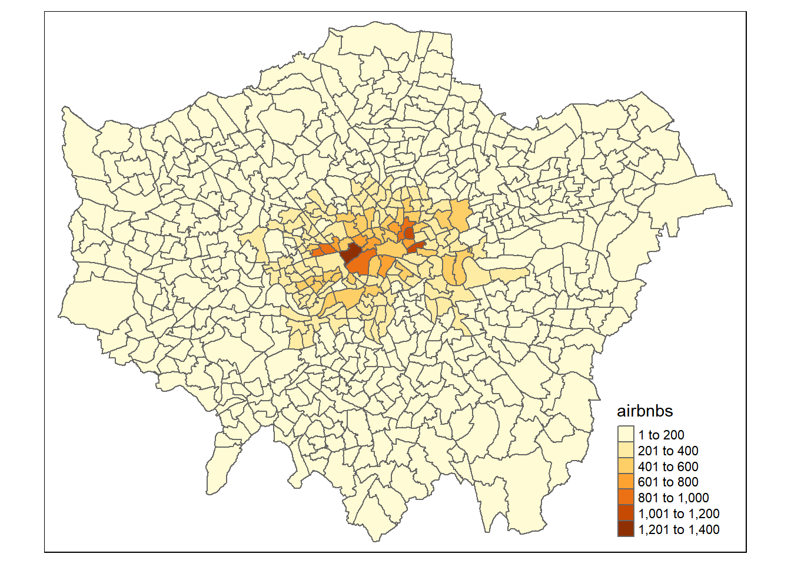
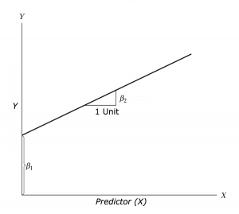
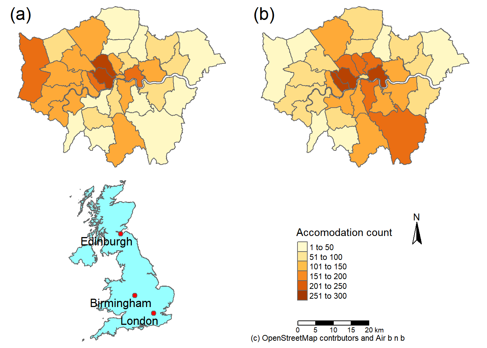
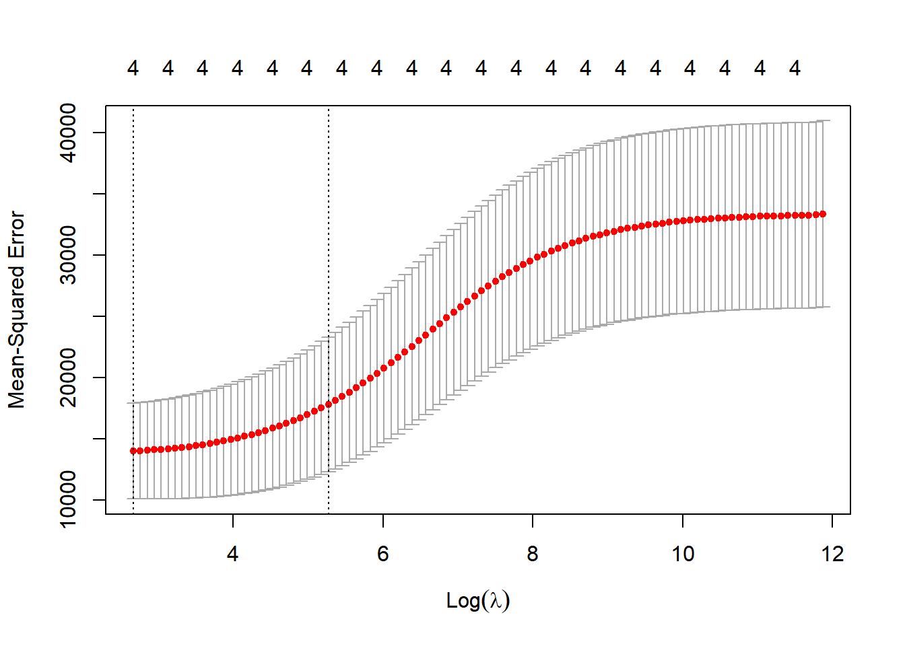

Chapter 10 Advanced R, MAUP and more regression
10.1 Learning outcomes
- Describe, explain and visualise the MAUP problem
- Design and use loops and functions
- Execute linear, Ridge and LASSO regression to predict values (e.g. future or missing)
- Critically evaluate different regression approaches
10.2 Homework
Outside of our schedulded sessions you should be doing around 12 hours of extra study per week. Feel free to follow your own GIS interests, but good places to start include the following:
Assignment
From weeks 10 until the assignment deadline, undertake your analysis, then write up your discussion and conclusion (that includes recommendations).
Before submission
Check that your assignment follows the standard model of scientific investigation. You may need to update your introduction and literature review based on the analysis you undertook to ensure a seamless narrative throughout.
Reading This week:
For advanced R coding Chapter 5 “Control flow” from Advacned R by Hadley Wickham.
For more advanced R inclduing functions Chapter 10 “Scripts, algorithms and functions” from Geocomputation with R by Lovelace, Nowosad and Muenchow (2020).
For Ridge and LASSO regression Chapter 4 “Linear models III: shrinkage, multivariate response, and big data” from Predictive Modeling by Portugués (2020).
Remember this is just a starting point, explore the reading list, practical and lecture for more ideas.
10.3 Recommended listening 🎧
Some of these practicals are long, take regular breaks and have a listen to some of our fav tunes each week.
Adam6 letters: LSB, DRS. Oh yes!
10.4 Introduction
The Modifiable Areal Unit Problem (MAUP) represents the related effects of scale and aggregation on all geographic data and analysis. It was first deomstrated by the geographer Stan Openshaw in 1984 who showed that as you aggregated results to diffrent spatial units the reults could be manipulated to show different outcomes. Throughout this practical book we’ve considered London boroughs, but would any of the results change if we considered the data at ward level? Are we hiding any trends because we have just used the borough data that summed all of the wards within the borough? It’s important to consider what is the most appropraite spatial unit for your analysis and provide appropraite reasoning. Even this is pretty straightforward (e.g. the data was only provided at the borough level) you must contextualise this and describe any potential limitations of it. In this practical i will firstly demonstrate the MAUP in action using some more advanced R code. Then we will have a look at some technqieus to model and validate data.
Here we will be using London brough and ward data from practical 1. As we’re getting better with R, we will try to automate almost everthing — meaning that if you gave this code to someone else they could just run it without any data files and generate the same result. The only thing we won’t automate later on is loading an excel file… i did find a function online that would let us read it from the interweb but it was more hassle than it was worth. I don’t know why the data isn’t just also distributed as a .csv.
10.5 MAUP
10.5.1 Get the data
- Download and unzip the London statistical gis boundaries.
# make a temp file to store the .zip in
download.file("https://data.london.gov.uk/download/statistical-gis-boundary-files-london/9ba8c833-6370-4b11-abdc-314aa020d5e0/statistical-gis-boundaries-london.zip",
destfile="prac10_data/statistical-gis-boundaries-london.zip")library(tidyverse)
library(fs)
listfiles<-dir_info(here::here("prac10_data")) %>%
dplyr::filter(str_detect(path, "statistical-gis-boundaries-london.zip")) %>%
dplyr::select(path)%>%
pull()%>%
#print out the .gz file
print()%>%
as.character()%>%
utils::unzip(exdir=here::here("prac10_data"))## C:/Users/Andy/OneDrive - University College London/Teaching/CASA0005/2020_2021/CASA0005repo/prac10_data/statistical-gis-boundaries-london.zipUsing a recent update we could also change this a bit with the pins() package that downlaods and caches the url and automatically checks for file changes, only re-downloading if needed!
library(pins)
pinexample<-pin("https://data.london.gov.uk/download/statistical-gis-boundary-files-london/9ba8c833-6370-4b11-abdc-314aa020d5e0/statistical-gis-boundaries-london.zip")pins() also lets you share data easily, have a look the RStudio pins blog post for more information.
- Take the downloaded data and filter it based on the filename that countains: Borough OR Ward_ AND
.shpusinggrepl()
boroughsandwards<-dir_info(here::here("prac9_data",
"statistical-gis-boundaries-london",
"ESRI"))%>%
#$ means exact match
dplyr::filter(str_detect(path,
"London_Ward_CityMerged.shp$|London_Borough_Excluding_MHW.shp$"))%>%
dplyr::select(path)%>%
pull()- Now read in both of the files using
map()that applies a function (herest_read()from thesfpackage) to a list.map()comes from thepurrrpackage which extends R’s functional programming ability.
## Reading layer `London_Borough_Excluding_MHW' from data source `C:\Users\Andy\OneDrive - University College London\Teaching\CASA0005\2020_2021\CASA0005repo\prac9_data\statistical-gis-boundaries-london\ESRI\London_Borough_Excluding_MHW.shp' using driver `ESRI Shapefile'
## Simple feature collection with 33 features and 7 fields
## geometry type: MULTIPOLYGON
## dimension: XY
## bbox: xmin: 503568.2 ymin: 155850.8 xmax: 561957.5 ymax: 200933.9
## projected CRS: OSGB 1936 / British National Grid
## Reading layer `London_Ward_CityMerged' from data source `C:\Users\Andy\OneDrive - University College London\Teaching\CASA0005\2020_2021\CASA0005repo\prac9_data\statistical-gis-boundaries-london\ESRI\London_Ward_CityMerged.shp' using driver `ESRI Shapefile'
## Simple feature collection with 625 features and 7 fields
## geometry type: POLYGON
## dimension: XY
## bbox: xmin: 503568.2 ymin: 155850.8 xmax: 561957.5 ymax: 200933.9
## projected CRS: OSGB 1936 / British National GridTo map or access each individual shapefile it’s just…

- Get the data for Airbnb
- And for OSM we’ll download it from geofabrik, you can also use the OSM Application Programming Interface (API) but there is a limit on the number of points downloadable per call so you’d have to do something a bit more complicated to get the whole of London…however, I have provided an example of the api call.
library(memisc)
download.file("http://download.geofabrik.de/europe/great-britain/england/greater-london-latest-free.shp.zip",
mode='wb',
destfile="prac10_data/geofabrik.zip")
listfiles<-dir_info(here::here("prac10_data")) %>%
dplyr::filter(str_detect(path, "geofabrik.zip")) %>%
dplyr::select(path)%>%
pull()%>%
#print out the .gz file
print()%>%
as.character()%>%
utils::unzip(exdir=here::here("prac10_data", "geofabrik"))Example of using the API….
library(osmar)
src <- osmsource_api(url = "https://api.openstreetmap.org/api/0.6/")
# 1000 refers to distance from centre point
bb <- center_bbox(-0.112510,51.507627, 1000, 1000)
LDN <- get_osm(bb, source = src)
plot(LDN)
# extract just highwways
ways <- find(LDN, way(tags(k == "highway")))
hway <- find_down(LDN, way(ways))
hway <- subset(LDN, ids = hway)10.5.2 Project the data
- Next up we need to project our
.shpdata …we could project our data indiviudally using:
or use map() again…
10.5.3 Functions
- Now remember our function we made for joining our Airbnb data (or Hotels) to the London boroughs layer… let’s make the fucntion again…
10.5.4 Loops
- Ok, but we want to get a count of Airbnb points per London ward and Borough…how can we do that?…well manually of course…like this…
Airbnbborough <- Joinfun(Airbnb, boroughsandwardssf[[1]])
Airbnbward <- Joinfun(Airbnb, boroughsandwardssf[[2]])But we can also autmoate this using a loop (either a while or for loop). I’ve used a while loop here as when i did my MSc you weren’t able to put a for loop inside a for loop. I beleive that has now changed but because of that one day i had to spend changing everything i always default to using a while loop.
Tell us what a loop is aleady?
A loop let’s you go over something adding 1 (or any value) each time…for example let’s look a basic loop. You need to run everything in the loop at once from the while to the }. If you make just a normal Rscript you can set breakpoints — the code will the stop each time it hits the breakpoint within the loop. You can’t do this at the moment with RMarkdown code chunks, i normally develop the loop outside of it looping then put it all together.
# set up a variable
basicloop <- 1
# so while our variable is less than
#6 run the following code within the {}
while (basicloop < 6) {
#print the varaible (starts at 1)
print(basicloop)
# then add 1 to the variable
basicloop = basicloop+1
# go back to the start of the loop
#and if it is still <6 run again
}## [1] 1
## [1] 2
## [1] 3
## [1] 4
## [1] 5That loop outputs the values of 1-5, as we started with a value of 1, then added 1 to make 2. It remained below 6 so the code ran again printing the 2 then added 1 again to make 3 and so on. As we specified less than 6 it stopped there..
We can also save these results to diffrent variables but we need to make a list (or dataframe/ whatever you need) to start with to save them in
# here is my empty list
emptylist <- list()
basicloop <- 1
while (basicloop < 6) {
print(basicloop)
emptylist[[basicloop]] <- basicloop
basicloop <- basicloop+1
}## [1] 1
## [1] 2
## [1] 3
## [1] 4
## [1] 5Here we are using the varaible basicloop to index our emptylist.. so everytime we add 1 it changes the index value….have a look what i mean…
## [[1]]
## [1] 1
##
## [[2]]
## [1] 2
##
## [[3]]
## [1] 3
##
## [[4]]
## [1] 4
##
## [[5]]
## [1] 5## [1] 1## [1] 2Right, so how are we going to apply this to our data. We have two .shp files (boroughs and wards) in a list that we want to apply our function to..
Firstly let’s set up the length to stop at, make an empty list and a starting point. As our data is in a list we just want the length of that (as a number)..
# get the length - add 1 as we are using less than
boroughlen<-length(boroughsandwardssf)+1
# empty list
hold<-list()
# here is our starting point variable
i<-1Now here is the loop..
# while i is less than boroughlength
# max of boroughlength is 3
while (i < boroughlen){
# put the output in our varible
# use the function for boroughs and then wards
hold[[i]] <- Joinfun(Airbnb, boroughsandwardssf[[i]])
# add one to the index
i<-i+1
}
# make a quick thematic map to have a look
justairbnbborough<-hold[[1]]%>%
dplyr::select(GSS_CODE, airbnbs)%>%
st_drop_geometry()%>%
distinct(GSS_CODE, airbnbs)%>%
left_join(boroughsandwardssf[[1]], .,
by = c("GSS_CODE" = "GSS_CODE"))
justairbnward<-hold[[2]]%>%
dplyr::select(GSS_CODE, airbnbs)%>%
st_drop_geometry()%>%
distinct(GSS_CODE, airbnbs)%>%
left_join(boroughsandwardssf[[2]], .,
by = c("GSS_CODE" = "GSS_CODE"))
qtm(justairbnbborough, fill = "airbnbs")

When should i use a loop?
Well that’s a hard question…generally loops used to be considered inefficient in R, but i’m yet to come across a method that will let you increment one varibale whilst keeping another consistent …by this i mean like what we did in our loop. We changed what spatial data was joined with the Airbnb data — the Airbnb data remained the same. There are a few other functions like mapply(), sapply() and tapply() that work in the same format as lapply() but to my knowledge they still will increment all of the variables at the same time.
In terms of code clarity i’m going to refer to section 21.5 on iteration in Wickham $ Grolemund (2017)…
“Some people will tell you to avoid for loops because they are slow. They’re wrong! (Well at least they’re rather out of date, as for loops haven’t been slow for many years). The chief benefits of using ‘other functions’ is not speed, but clarity: they make your code easier to write and to read”.
That said, within this course you are not marked on how ‘good’ or ‘efficient’ your code is. Sure, i want you to write great code, but if you are writing code for your assigment or any future project really, my advice is the same. Get something that works and addresses the mark scheme (read the mark scheme!) and then if you have time, improve it later on. There is also a section later on about writing advanced code in the assignment.
10.5.5 Advanced mapping (again)
- Right, so we can sort of see the difference between the spatial levels (boroughs and wards) but let’s take a closer look within Westminster… here is the ‘preamble’ for the
leafletmap …basically all the stuff we need to set it up…
library(classInt)
library(leaflet)
library(leafpop)
# extract only westminster from boroughs
Borough <- hold[[1]] %>%
filter(NAME=="Westminster")%>%
# we need to set the projection to WGS84
# to use with leaflet
st_transform(., crs=4326)%>%
#at the moment each airbnb is a row for the borough
#we just one one row that has number of airbnbs
group_by(., GSS_CODE, NAME)%>%
summarise(airbnbs = unique(airbnbs))
wardsatborough <- hold[[2]] %>%
filter(BOROUGH=="Westminster")%>%
# we need to set the projection to WGS84
# to use with leaflet
st_transform(., crs=4326)%>%
#at the moment each airbnb is a row for the wards
#we just one one row that has number of airbnbs
group_by(., GSS_CODE, NAME)%>%
summarise(airbnbs = unique(airbnbs))
# set our breaks for the map
breaks1<-classIntervals(hold[[1]]$airbnbs,
n=5,
style = "quantile")
breaks2<-classIntervals(wardsatborough$airbnbs,
n=5,
style = "quantile")
# use the breaks to set our colour palettes
pal <- colorBin(palette = "YlOrRd",
domain=hold[[1]]$airbnbs,
bins=breaks1$brks)
pal2 <- colorBin(palette = "YlOrRd",
domain=wardsatborough$airbnbs,
bins=breaks2$brks)
# we want a popup of information too
# here we make a new varaible with no
#spatial info (remove geometry)
wardinfo <-wardsatborough %>%
st_drop_geometry()%>%
dplyr::rename(Ward = NAME,
Airbnbs = airbnbs)%>%
dplyr::select(Ward, Airbnbs)%>%
popupTable()
boroughinfo <-wardsatborough %>%
st_drop_geometry()%>%
dplyr::rename(Borough = NAME,
Airbnbs = airbnbs)%>%
dplyr::select(Borough, Airbnbs)%>%
popupTable()- Now let’s map it using what we just specified… i’ve added a few more features than were in the Map making practical
wardandboroughs<- leaflet() %>%
# add basemap options
addProviderTiles(providers$Stamen.TonerLite, group = "Toner Lite") %>%
addTiles(group = "OSM") %>%
#add our Borough polygons, linking to the tables we just made
addPolygons(data=Borough,
color="white",
weight = 2,
opacity = 1,
dashArray = "3",
fillOpacity = 0.7,
popup = boroughinfo,
fillColor = ~pal(Borough$airbnbs),
group = "Borough")%>%
#add our ward polygons, linking to the tables we just made
addPolygons(data=wardsatborough,
color="white",
weight = 2,
opacity = 1,
dashArray = "3",
fillOpacity = 0.7,
popup = wardinfo,
fillColor = ~pal2(wardsatborough$airbnbs),
group = "Wards")%>%
# add a legend for wards
addLegend(pal = pal2,
values = wardsatborough$airbnbs,
group=c("Wards"),
position ="bottomleft",
title ="Accom count")%>%
# add a legend for boroughs
addLegend(pal = pal,
values = Borough,
group=c("Borough"),
title ="Accom count",
position ="bottomleft")%>%
# specify layers control
addLayersControl(
baseGroups = c("Toner Lite", "OSM"),
overlayGroups = c("Borough", "Wards"),
options = layersControlOptions(collapsed = FALSE))%>%
hideGroup(c("Borough"))
# show us the map
wardandboroughsHave a look around the map…Westminster borough uses a scale considering all other London borough values, whilst the ward scale is specific to Westminster. Use the following code to explore the values…
10.6 Regression relationships
Warning The data used within this practical is purely for demonstration purposes!
10.6.1 Preprocessing
In this part of the practical we’re going to try and model the relationship between the Airbnb counts at ward level and other variables. Our mini investagion here would be to see if it’s possible to produce a statisitcally valid and rigorous model for predicting Airbnb values at the ward level. This type of analysis might be useful if you had missing or limited data at one spatial level (e.g. wards) but had a more complete dataset at a larger spatial scale (e.g. boroughs). Essentially, we’re trying to use the data at the borough level to give us an estiamte of the data at the ward level. Obviously this isn’t an issue for us here but if you ever use survey data or any kind of count data (e.g. health) if may well be limited to specific areas…
This section will also show you how to make/ use different regression models in R. Regression aims to find a mathematical equation to predict a value (in this case Airbnb at ward level) from one (or more) predictor variables (e.g. borough data). So we’ll use values of X (borough data) to predict values of Y (ward data)…

This can be represented with the equation:
\[Y = \beta_{1} + \beta_{2} X + \epsilon\] Where \(\beta_{1}\) is the intercept (expected value of Y when X=0, also called bias in machine learning), \(\beta_{2}\) is the slope of the line and \(\epsilon\) is the error term, the part that the model is unable to explain (and variables are not included)…Here we would call the intercept and slop coefficients.
- To start with we’re going to crop our wards data to our boroughs data. In the borough data you can see the river Thames which isn’t in the wards data. I don’t think this is technically required, but it’s good practice to make sure you datasets align and if they don’t to do something about it…
library(tmaptools)
cropped <- justairbnbborough %>%
crop_shape(justairbnward,., polygon = TRUE)
# something like this would just extract the
# values within the shape, but not clip like a cookie cutter
# we want to use the borough layer to cut out the river from
# the wards layer
###test <- hold[[2]][hold[[1]],]
# check it worked, you should be
#able to see the river
plot(st_geometry(cropped))
- Now we need to join our wards data and borough data togther to give us a borough value for each ward within…
10.6.2 Scatter plot
- To start with let’s just visualise the relationship between the borough an ward count using a scatter plot. If you have multiple predictor variables (explied later on) a plot will be drawn for each of them…
p <- ggplot(joined, aes(Boroughcount, Wardcount))+
geom_point()+
xlab("Borough count")+
ylab("Ward count")The scatter plot shows some kind of linear relationship. The point variation around borough count is beacuse for each borough the wards will have a range of values…like we saw in the interactive map…Westminster borough had a value of 9410 and the wards ranged from 159 to 1215
10.6.3 Outliers
- Generally any point that is outside 1.5* the interquartile-range (or IQR) is considered an outlier (a data point that differs significantly from all others) and you could use something like the methods here to remove and replace them…the IQR is the distance between the 25th and 75th percentile..
par(mfrow=c(1, 2)) # divide graph area in 2 columns
boxplot(joined$Boroughcount, main="Boroughs")
boxplot(joined$Wardcount, main="Wards")
Warning The data used within this practical is purely for demonstration purposes! These box plots indicate that our data is not normally distributed so you might want to refer to the assumptions in last week’s practical if you were to do this propperly.
10.6.4 Correlation
- Correlation let’s use see the level of linear dependence between two varaibles between -1 and 1. High values (towards 1) mean that for every x instance there is an increase in y. Low values (towards -1) mean the opposite.
library(corrr)
Correlation <- joined %>%
st_drop_geometry()%>%
dplyr::select(Boroughcount,
Wardcount)%>%
correlate() %>%
print()## # A tibble: 2 x 3
## rowname Boroughcount Wardcount
## <chr> <dbl> <dbl>
## 1 Boroughcount NA 0.789
## 2 Wardcount 0.789 NA- Looks, like we’ve got a strong relationship.
10.6.5 Linear model
- Now let’s use a linear model to establish a relationship between predictor and response with the function
lm(). Here we are calling thelm()(then stating the Formula, then the data)
## # A tibble: 2 x 5
## term estimate std.error statistic p.value
## <chr> <dbl> <dbl> <dbl> <dbl>
## 1 (Intercept) -10.9 6.20 -1.76 7.97e- 2
## 2 Boroughcount 0.0550 0.00182 30.2 2.68e-119So from this output we have the coefficients of intercept and Boroughcount, going back to our formula from earlier this would mean…
\[Wardcount = -3.8188 + 0.0541*Boroughcount\]
10.6.6 Linear model outputs
Coefficient Estimates
Our intercept, the expected value of Y when X=0 is -3.8 and slope is 0.054.
Standard error
The coefficient standard error represents the average amount that coeffieint estimates vary from the average of our response. It basically shows the expected range if we were to model again and again. So here, for a 1% increase in the number of Airbnbs per ward by 0.05, but this might vary by 0.001. Ideally the standard error is lower than the size of the coeffeicient (0.001 is lower the 0.05)
p-value
A linear model is only statistically significant when both p-values are <0.05 within the summary call. There are two values as one if for the coefficient (is the specific coefficient significant) and the other is for the model (is the model significant). Here as they both are, this would allow us to accept the alternative hypothesis that the coefficients are not equal to 0 (and therefore there is a relationship between the independent and dependent variabile).
R-squared
R squared represents the proportion of variance of the dependent variable that is explained by the independent. It is different from correlation as that is the strength of the relationship!!! R squared is often referred to as ‘goodness-of-fit’. Here 61% of the variance in Airbnb ward count can be explained by the varaition in Airbnb borough count.
But there are a few issues with R squared — every time you add a predictor to the model R squared will increase and if there are too many predictors it will model random noise
Adjusted R squared
Adjusted R squared consideres the number of variables within the model, increasing only if the new term assits by more than just chance.
t
Coefficient t shows how many standard deviations the coefficient estaimte is away from 0 — the further away means the more likely we can reject the null hypothesis. It is calcaulted by dividing the value of the coeffeicient by the standard error
Residual error
Residual standard error is a measure of the quality of fit of the linear regression line. It is an average of the error that the points differ out from the line.
F
F-statistcs, basically, the futher from 1 the better it is.
See this guide for more information on the outputs
Remember the formula produced from the regression equation, well we can also extract this automatically …to make that original formula in RMarkdown I used this (not within a code chunk)….
But we can also extract it directly using a new package from GitHub…
## $$
## \text{Wardcount} = \alpha + \beta_{1}(\text{Boroughcount}) + \epsilon
## $$Play around with line length and use the actual coefficient names
## $$
## \begin{aligned}
## \text{Wardcount} &= -10.89 + 0.06(\text{Boroughcount})\ + \\
## &\quad \epsilon
## \end{aligned}
## $$This would produce the following in RMarkdown….
\[ \begin{aligned} \text{Wardcount} &= -3.82 + 0.05(\text{Boroughcount})\ + \\ &\quad \epsilon \end{aligned} \]
Have a look here for more information on using equatiomatic().
10.6.7 Validation
- We’ve made a regression model using all of our data but there is now no way to test its validity…what if we take 20% as a test sample and use the remaining 80% to train it…
joinedID <- joined %>%
st_drop_geometry()%>%
mutate(Wardcount = replace_na(Wardcount, 0))%>%
mutate(id = row_number())
# Create training 80% index
train <- joinedID %>%
sample_frac(.70)
# Create test set
test <- anti_join(joinedID,
train,
by = 'id')Now let’s build the model…
# build the model
lmMod <- lm(Wardcount ~ Boroughcount,
data=train)
# use the model to make some predicitons with our test data
library(caret)
predictions <- lmMod %>%
predict(test)
# get R2, RMSE and MAE
stats<-data.frame(R2 = R2(predictions, test$Wardcount),
RMSE = RMSE(predictions, test$Wardcount),
MAE = MAE(predictions, test$Wardcount))
t
- We can use the R2, Root Mean Square Error and Mean Absolute Error.
\(R^2\) is the variation of y explained by x
Mean Absolute Error measures the average magnitude of the errors (distance of points from the regression line) using:
\[MAE = {\frac{1}{n}\Sigma_{i=1}^{n}{\Big({d_i -f_i\Big)}}}\]
- Root Mean Square Error (RMSE) is the standard deviation of the resuiduals, this means how far away the points are from the regression line…
\[RMSE= \sqrt{\frac{1}{n}\Sigma_{i=1}^{n}{\Big({d_i -f_i}\Big)^2}}\] Where \(d_i\) is the actual value, \(d_f\) is the predicted value, and \(n\) is the number of data points
We could also just run a correlation between the data we left out and the predicted data to assess the accuracy…
actuals_preds <- data.frame(cbind(actuals=test$Wardcount,
predicteds=predictions))
actuals_preds_correlation <- actuals_preds %>%
correlate() %>%
print()## # A tibble: 2 x 3
## rowname actuals predicteds
## <chr> <dbl> <dbl>
## 1 actuals NA 0.776
## 2 predicteds 0.776 NAThis shows us that we have a strong and significant relationship between our model output and the test data.
- We can also use min-max accuracy to see how close the actual and predicted values are…using the equation…
\[MinMaxAccuracy= mean\left( \frac{min(actuals, predicteds}{max(actuals, predicteds)} \right)\]
min_max_accuracy <- mean(apply(actuals_preds, 1, min, na.rm=TRUE) /
apply(actuals_preds, 1, max, na.rm=TRUE))
min_max_accuracy## [1] 0.5168844- This gives around a 60% accuracy…another alternative is mean absolute percentage deviation which is a statistical measure showing how accurate the prediciton was…through the equation…
\[MAPE= mean\left( \frac{abs(predicteds - actuals}{actuals} \right)\]
mape <- mean(abs((actuals_preds$predicteds -
actuals_preds$actuals))/
actuals_preds$actuals, na.rm=TRUE)
mape## [1] InfHere we’ve got a very high MAPE — this is most likely because of the range of values of the wards for individual boroughs…
10.6.8 Cross validation
- Our validation approach so far was OK, but what if the test data was a different 20% — would it still hold up? We can test this by dividing all our data into blocks and then running the analysis several times, each time selecting a different block to be the test data…this is called cross validation …

- To start with we’ll remove the geomtery, set up a data frame and replace any NAs with 0 — this is appropraite here as if there are no Airbnbs within the ward they would be 0.
- Now let’s change our training data… here i’ve got 5 iterations then the whole lot is repeated 3 times. Search literautre for the right number to use, i think 10 iterations with no repeats is a good place to start.
library(caret)
model<- train(Wardcount ~ Boroughcount,
joined_CV,
method="lm",
trControl=trainControl(method="repeatedcv",
number=5,
repeats=3,
# change to true to
# see it iterate
verboseIter=FALSE))
summary(model)##
## Call:
## lm(formula = .outcome ~ ., data = dat)
##
## Residuals:
## Min 1Q Median 3Q Max
## -347.88 -38.61 0.26 20.97 708.12
##
## Coefficients:
## Estimate Std. Error t value Pr(>|t|)
## (Intercept) -10.935710 6.184881 -1.768 0.0776 .
## Boroughcount 0.055028 0.001816 30.294 <2e-16 ***
## ---
## Signif. codes: 0 '***' 0.001 '**' 0.01 '*' 0.05 '.' 0.1 ' ' 1
##
## Residual standard error: 100.7 on 554 degrees of freedom
## Multiple R-squared: 0.6236, Adjusted R-squared: 0.6229
## F-statistic: 917.7 on 1 and 554 DF, p-value: < 2.2e-16## Linear Regression
##
## 556 samples
## 1 predictor
##
## No pre-processing
## Resampling: Cross-Validated (5 fold, repeated 3 times)
## Summary of sample sizes: 444, 447, 445, 444, 444, 444, ...
## Resampling results:
##
## RMSE Rsquared MAE
## 99.65453 0.6364164 57.45796
##
## Tuning parameter 'intercept' was held constant at a value of TRUEResults show that our cross validated model accounts for around 60% of varaince of the number of Airbnbs per ward…compare this to the results from the standard linear regression…
10.7 Advanced regression
10.7.1 More data
- We’re going to have a look at Ridge and LASSO regression next…however, they require us to have more than 1 predictor variable, so we’ll load a few in and demonstrate how to use them in normal regression first…
We’ll get our OSM data, project it, extract only hotels, join it with the boroughs, set any NAs to 0, join it with the wards, rename the new ‘freq’ coloumn to Hotel count, remove the geometry and then set any more NAs to 0…
# read in OSM data
OSM <- st_read(here::here("prac10_data", "geofabrik", "gis_osm_pois_a_free_1.shp"))## Reading layer `gis_osm_pois_a_free_1' from data source `C:\Users\Andy\OneDrive - University College London\Teaching\CASA0005\2020_2021\CASA0005repo\prac10_data\geofabrik\gis_osm_pois_a_free_1.shp' using driver `ESRI Shapefile'
## Simple feature collection with 37108 features and 4 fields
## geometry type: MULTIPOLYGON
## dimension: XY
## bbox: xmin: -0.5108706 ymin: 51.28117 xmax: 0.322123 ymax: 51.68948
## geographic CRS: WGS 84# project and filter
OSM <- OSM %>%
st_transform(., 27700) %>%
filter(fclass == "hotel")
# join hotels with the boroughs
Hotels_borough <- OSM %>%
Joinfun(., boroughsandwardssf[[1]]) %>%
# rename hotels
dplyr::rename(hotels = airbnbs) %>%
# replae NA with 0
mutate(hotels = replace_na(hotels, 0))
joined2<-joined %>%
st_drop_geometry()%>%
left_join(.,
Hotels_borough,
by= c("GSS_CODE.x" = "GSS_CODE"))%>%
dplyr::select(NAME.y,GSS_CODE.x, Boroughcount, Wardcount, hotels)%>%
distinct()%>%
#replace NA in wards with 0
mutate(Wardcount = replace_na(Wardcount, 0))10.7.2 Multiple linear regression
- Re run the model including Hotel count…you simply use a +
model2<- train(Wardcount ~ Boroughcount+hotels,
joined2,
method="lm",
trControl=trainControl(method="repeatedcv",
number=5,
repeats=3,
# change to true to see it
# iterate
verboseIter=FALSE))
summary(model2)##
## Call:
## lm(formula = .outcome ~ ., data = dat)
##
## Residuals:
## Min 1Q Median 3Q Max
## -340.04 -38.24 0.51 21.02 715.96
##
## Coefficients:
## Estimate Std. Error t value Pr(>|t|)
## (Intercept) -11.485809 6.342871 -1.811 0.0707 .
## Boroughcount 0.055620 0.002351 23.656 <2e-16 ***
## hotels -0.033929 0.085485 -0.397 0.6916
## ---
## Signif. codes: 0 '***' 0.001 '**' 0.01 '*' 0.05 '.' 0.1 ' ' 1
##
## Residual standard error: 100.8 on 553 degrees of freedom
## Multiple R-squared: 0.6237, Adjusted R-squared: 0.6223
## F-statistic: 458.2 on 2 and 553 DF, p-value: < 2.2e-16The summary here shows that the hotel count predictor is not statistically significant so we should remove it…how about we add some population and house price data….download the excel data from here
library(readxl)
library(janitor)
# read the excel sheet
my_data <- read_excel(here::here("prac10_data","ward-profiles-excel-version.xls"),
sheet=2,
col_names=TRUE) %>%
# set it as a data frame
as.data.frame()%>%
clean_names()%>%
# extract everything that begins with E
filter(str_detect(new_code, "^E"))
# is our data num
Datatypelist <- my_data %>%
summarise_all(class) %>%
pivot_longer(everything(),
names_to="All_variables",
values_to="Variable_class")
# make sure the variables are numeric
my_data <- my_data %>%
mutate(across(.cols = 4:67, as.numeric))
# merge the new data to the existing data
joined3 <-joined2 %>%
left_join(.,
my_data,
by= c("GSS_CODE.x" = "new_code"))- Now run the model again
model3<- train(Wardcount ~ Boroughcount+population_2015
+median_house_price_2014,
joined3,
method="lm",
trControl=trainControl(method="repeatedcv",
number=5,
repeats=3,
verboseIter=FALSE))
summary(model3)##
## Call:
## lm(formula = .outcome ~ ., data = dat)
##
## Residuals:
## Min 1Q Median 3Q Max
## -351.59 -34.88 -3.98 21.15 704.41
##
## Coefficients:
## Estimate Std. Error t value Pr(>|t|)
## (Intercept) 3.664e+01 2.878e+01 1.273 0.2035
## Boroughcount 5.432e-02 2.623e-03 20.709 <2e-16 ***
## population_2015 -1.700e-04 7.873e-05 -2.159 0.0313 *
## median_house_price_2014 2.218e-06 3.544e-05 0.063 0.9501
## ---
## Signif. codes: 0 '***' 0.001 '**' 0.01 '*' 0.05 '.' 0.1 ' ' 1
##
## Residual standard error: 100.2 on 553 degrees of freedom
## Multiple R-squared: 0.6281, Adjusted R-squared: 0.626
## F-statistic: 311.3 on 3 and 553 DF, p-value: < 2.2e-16Our R squared and adjusted R squared have increased (albeit slightly) and all predictors are statistically significant.
Note that whilst i have selected variables pretty randomly here for demonstration, if you use something like this in practice it’s important to have supported (referenced) reasoning behind your selections.
10.7.3 Ridge regression
Least squares regression tries to minimise how far each point is away from the line…but if you look in this figure…the red dots are the training data and the green dots are the test data. Here normal OLS has been fitted to the training data perfcetly…the sum of the sqaured residuals (squared error distance from the line) is very small, probably 0. But when applied to the test data the sum of the squared residuals is large — it therefore has high variance and would be termed to be overfitting the training data.

Figure 10.1: This is a screenshot from the YouTube video Regularization Part 1: Ridge Regression by StatQuest
Ridge regression probably won’t fit our training data as well, becuase we introduce a small amount of bias (adding value to the intercept — which is the Y value when X=0) to give us less overall variance (the difference between the point and line value)…So essentially when the values are calculated the formula is trying to get the line of best fit through all the points with each point having minimum distance to the line.
Ridge regression also tries to minimise the sum of the sqaured residuals (distance to the line) but then adds \(\lambda\) x \(slope^2\) — this increases the value of Y when X=0.
Ok so let’s try and look at this with numbers…
The goal here is to minimise the sum of the sqaured residuals…plus the ridge regression penalty \(\lambda * slope^2\)…
Firstly let’s assume you have a perfectly fit line — the sum of the least sqaure residuals would be 0 (the line overlaps the points). Assume \(\lambda\) is 0.5 and the slope is 1.2, we have 0 + 1.44 = 1.44
Now we use ridge regression that shifts the line away from the perfect fit (with a bias penalty) that we had in least square regression…this would create residual values as the points no longer perfectly fit the line, assume these add to 0.2, \(\lambda\) is 0.5, and the slope is 0.7…so this would give 0.445.
So if we were trying to minimise the sum of the sqaured residuals plus the ridge regression penatly the ridge regression wins with a lower value.
The penatly \(\lambda * slope^2\) adds a bias (value to the intercept) to reduce the slope of the line as it tries to the minimise the sum of the distance of the points from the line and hopefully the variance between the line and the points…like this — Ridge is the blue line that has become slightly more horizontal…
Figure 10.2: This is a screenshot from the YouTube video Regularization Part 1: Ridge Regression by StatQuest
But wait…. how do we calcualte \(\lambda\), well we try a load of values and use cross validation (10 fold) to get the overall lowest variance from the line to the data points! COOL!!!!
- Let’s see an exmaple to show that if \(\lambda\) is 0, then we have our box standard linear regression…as the penalty \(\lambda * the slope^2\) will be 0, so we will just be minimising the sum of the sqaured residuals.
library(tidyverse)
library(broom)
library(glmnet)
# sort the data our for ridge regression
y <- joined3$Wardcount %>%
# set NAs to 0
replace_na(., 0)
x <- joined3 %>%
dplyr::select(Boroughcount, hotels,
population_2015,
median_house_price_2014) %>%
data.matrix()%>%
# set NAs to 0
replace_na(., 0)
# set seed means that if we re run this
# we will get the same results
set.seed(489)
# this gives us a 50/50 split between
# training and test data
train = sample(1:nrow(x), nrow(x)/2)
test = (-train)
ytest = y[test]
xtest =x[test]
# run normmal regression
normallm <- lm(Wardcount ~ hotels+Boroughcount+population_2015
+median_house_price_2014,
data = joined3)
summary(normallm)##
## Call:
## lm(formula = Wardcount ~ hotels + Boroughcount + population_2015 +
## median_house_price_2014, data = joined3)
##
## Residuals:
## Min 1Q Median 3Q Max
## -334.19 -35.85 -2.95 20.95 721.81
##
## Coefficients:
## Estimate Std. Error t value Pr(>|t|)
## (Intercept) 3.175e+01 2.935e+01 1.082 0.2798
## hotels -7.851e-02 9.174e-02 -0.856 0.3925
## Boroughcount 5.506e-02 2.761e-03 19.944 <2e-16 ***
## population_2015 -1.679e-04 7.878e-05 -2.132 0.0335 *
## median_house_price_2014 1.350e-05 3.782e-05 0.357 0.7213
## ---
## Signif. codes: 0 '***' 0.001 '**' 0.01 '*' 0.05 '.' 0.1 ' ' 1
##
## Residual standard error: 100.3 on 552 degrees of freedom
## Multiple R-squared: 0.6286, Adjusted R-squared: 0.6259
## F-statistic: 233.5 on 4 and 552 DF, p-value: < 2.2e-16# make a variable for loads of lambda values
# just for the example here
lambda <- 10^seq(10, -2, length = 100)
#run ridge regression, here we use x to predict y
ridge_mod <- glmnet(x, y, alpha = 0, lambda = lambda)
# x and y are our original data,
#s is the size of the penalty which is 0
# and we want the coefficients out
predict(ridge_mod, x=x,y=y, s = 0, exact = T, type = 'coefficients')## 5 x 1 sparse Matrix of class "dgCMatrix"
## 1
## (Intercept) 3.172445e+01
## Boroughcount 5.505627e-02
## hotels -7.854144e-02
## population_2015 -1.678941e-04
## median_house_price_2014 1.353453e-05- The coefficient estaimtes should be the same or very very similar…now let’s try and use ridge regression to improve upon our least squares regression…first let’s show linear regression for comparison using the train data..
normallm2 <- lm(Wardcount ~ hotels+Boroughcount+population_2015
+median_house_price_2014,
data = joined3,
subset = train)
s_pred <- predict(normallm2, newdata = joined3[test,])
mean((s_pred-ytest)^2)## [1] 8068.011- Now we will find the best value for \(\lambda\) using cross validation
#find the best lambda from our list via cross-validation
# family = gaussian means linear regression
# type.measure = how cross evaluation will be evaluated
# mse is mean square error
cv_out <- cv.glmnet(x[train,],
y[train],
alpha = 0,
family="gaussian",
type.measure = "mse")Combined, this will fit a linear regression with a ridge regression penatly using 10-fold cross validation to find the best \(\lambda\) value that minimises mean square error (average squared distance of the data points to the line). Let’s apply it to the model…

# best value
opt_lambda <- cv_out$lambda.min
# prediction to the testing data
# s is set to optimal lambda
# you could also use lambda.1se as
# technically they are indistinguishable
ridge_pred <- predict(ridge_mod, s = opt_lambda, newx = x[test,])
# rsquared
ridge_r <- cor(y[test], ridge_pred)^2
ridge_r## 1
## [1,] 0.6543214## [1] 7134.638You can also doing this in a few less steps with the ridge package
10.7.4 LASSO
Least absolute shrinkage and selection operator (LASSO) performs variable selection and regularisation to increase prediction accuracy of the model…the only difference to ridge is that the regularisation term is an absolute value. So instead of squaring the slope (like i metioned in Ridge regression), we take the absolute value. As a result LASSO regression can increase \(\lambda\) then set irrelevant parameters to 0 (Ridge will just shrink them but not set to 0) — relevant paramters might shink a little bit in both too. The advantage here is that LASSO can exclude useless variables — so if you have a lot of variables it might be preferable. However, if most variables are useful then Ridge regression would probably work better.
#find the best lambda from our list via cross-validation
cv_out <- cv.glmnet(x[train,],
y[train],
alpha = 1,
family="gaussian",
type.measure = "mse")
plot(cv_out)
# best value
opt_lambda <- cv_out$lambda.min
# make the model
lasso_mod <- glmnet(x[train,], y[train], alpha = 1, lambda = opt_lambda)
# make the prediction
lasso_pred <- predict(lasso_mod, s = opt_lambda, newx = x[test,])
# r sqaured
LASSO_r <- cor(y[test], lasso_pred)^2
LASSO_r## 1
## [1,] 0.6423348## [1] 7588.75610.7.5 Elastic net regression
When you don’t know much about our variables in a model you can use Elastic-Net Regression. It starts with least squares then adds the LASSO and ridge regression penatly, allowing you to use the strengths of both. Both the LASSO penatly and ridge penatly get their own \(\lambda\) values, \(\lambda_1\) for LASSO, \(\lambda_2\) for ridge. Cross validation runs for both \(\lambda_1\) and \(\lambda_2\). If both \(\lambda_1\) and \(\lambda_2\) > 0 then we get a hybrid approach, this is good when we have correlated variables. LASSO will pick just one correlated variable and eliminate the other, whereas ridge will just shrink all of them. Using both LASSO and ridge we can group and shrink correlated variables or remove them all at the same time.
In R, Elastic-Net Regression is where you change the alpha value between 0 and 1. You would use elastic net regression to see if it is possible to reduce the mean square error any further. Have a look at this video to see how to use a for loop to test different values for alpha.
10.7.6 What’s the best here
Let’s compare the results of the MSE and r sqaured for the normallm2, LASSO and Ridge as we used the same predictors…this is the code to get the values we don’t already have…
## [1] 0.6274311Our lowest MSE and highest R sqaured value here is provided by Ridge regression…so from this anaylsis i’d select Ridge regression to predict any missing or future values of Airbnbs within the London wards…i’d probably also conisder exploring using machine learning methods that are linked to below…
Warning The data used within this practical is purely for demonstration purposes!
10.7.7 What should i use
It depends, just because Ridge regression seems to be the best for this application, it might not be for yours. It’s important to check the suitability of each method for both your data and analysis.
10.7.8 So how do i predict
Easy…just go back through the code and use the the predict() function — this will also work for linear models…
# replace with your data - this is just an example
# setting intervals specifies confidence intervals
# at the required level
predict(linearmodel, newdata, interval="confidence", level=0.95) WARNING Never try and predict data outside the range of your values, for example in the first regression model we ran when the count within Boroughs was 0 we had -3.8188 for Airbnbs within wards and it’s impossible to have negative Airbnbs.
10.7.9 Should i write advanced code
It would be great if you could write your analysis in as least possible lines of code as possible…BUT you are not marked on how concise or efficient your code is in this course. My advice would be to get something that works and addresses all of the marking criteria and listen to Hadley Wickham….
The only way to write good code is to write tons of shitty code first. Feeling shame about bad code stops you from getting to good code
— Hadley Wickham ((???)) April 17, 2015
10.8 More resources
10.9 Extension
If you are already familiar with these regression methods try the following:
- Apply them to a dataset of your choice to see if you can predict a specific variable
- This free course by Julia Silge on supversied machine learning is pretty great
- Explore and apply machine learning techniques for predicting data such as Random Forest, Classification and Regression Trees, Support Vector Machine and others
- Try out maximum likelihood for estimating model parameters
- Have a look at the new tidymodels package
- Check out Machine learning fundamentals too.
10.10 Acknowledgement
I’m certainly not an expert statistician but StatQuest with Josh Starmer really helped me explain all this.
10.11 Feedback
Was anything that we explained unclear this week or was something really clear…let us know using the feedback form. It’s anonymous and we’ll use the responses to clear any issues up in the future / adapt the material.